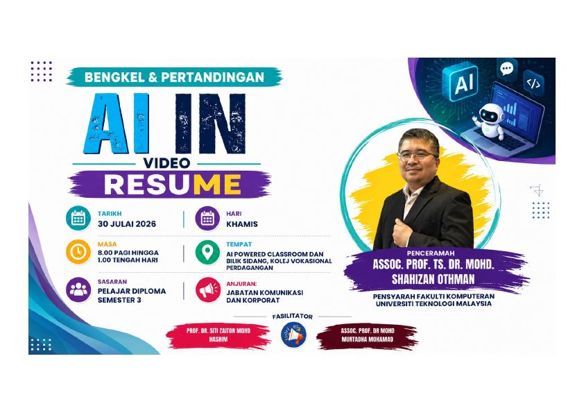
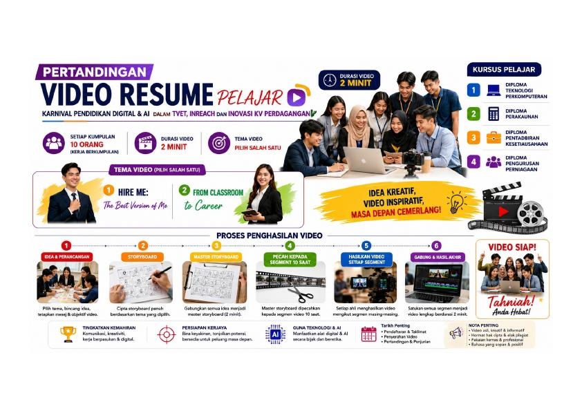
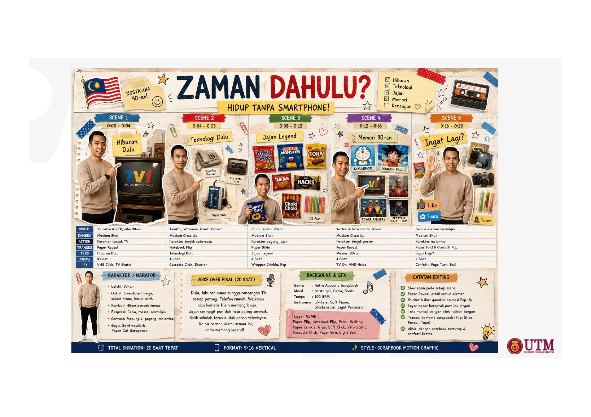
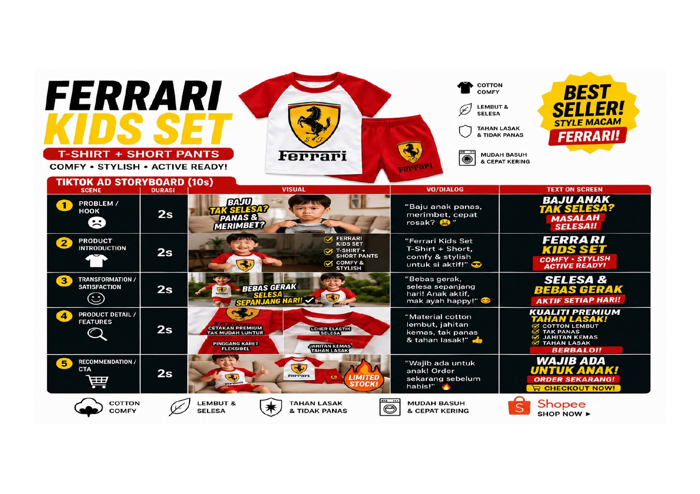
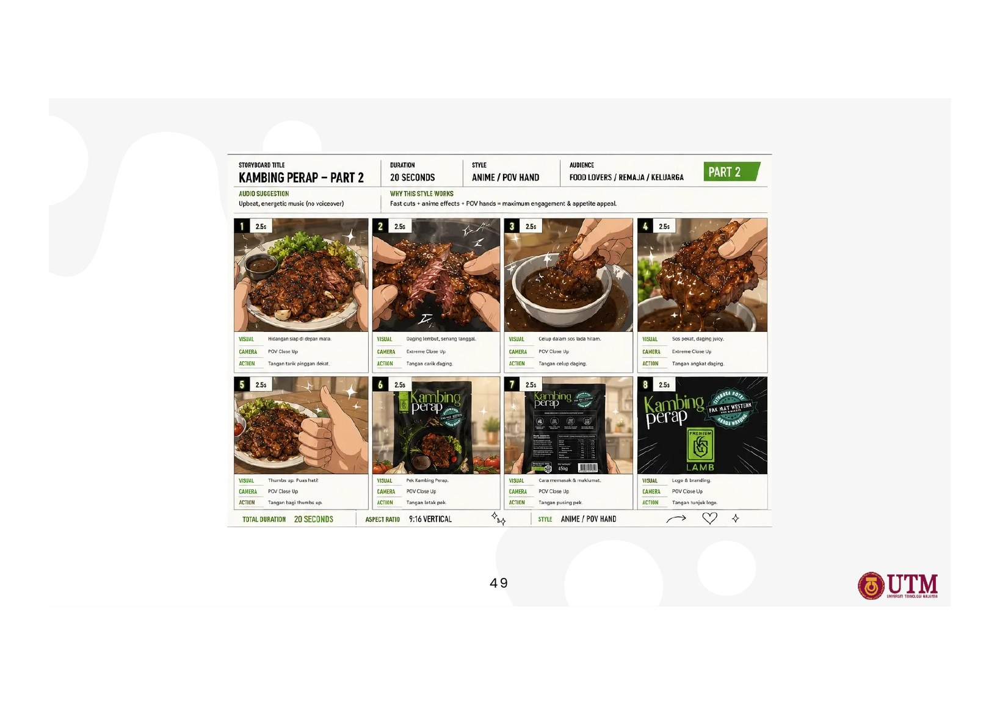

Bengkel + Pertandingan · TVET 2026
Jadikan potensi anda
cerita yang memukau.
Cipta video resume profesional selama dua minit dengan Generative AI — daripada idea, storyboard dan prompt hingga penyuntingan akhir.
Idea menjadi visual.

12 segmen
10 saat setiap segmen
10 saat setiap segmen
Dikuasakan
Generative AI
Generative AI
Tentang Program
Bina profil profesional. Tampilkan potensi melalui AI.
Bengkel amali untuk membantu pelajar membina personal branding dan menghasilkan video resume yang meyakinkan untuk latihan industri, kerjaya, biasiswa dan portfolio profesional.
Untuk siapa?
Pelajar Diploma Semester 3 yang mahu mengubah kemahiran teknikal, pencapaian dan aspirasi kerjaya menjadi naratif visual yang profesional.
Lokasi
AI Powered Classroom and Meeting Room, Kolej Vokasional Perdagangan.
Penceramah
Assoc. Prof. Ts. Dr. Mohd Shahizan Othman
Fasilitator
Prof. Dr. Siti Zaiton Mohd Hashim dan Assoc. Prof. Dr. Mohd Murtadha Mohamad.
Kenapa Perlu Sertai?Bukan sekadar belajar AI.
Bukan sekadar belajar AI.
Anda menghasilkan sesuatu yang nyata.
Literasi AI
Fahami Generative AI dan gunakannya secara bertanggungjawab.
Prompt Engineering
Tulis arahan yang menghasilkan skrip, watak dan visual konsisten.
Storyboard
Rancang naratif, kamera, pencahayaan, emosi dan audio.
AI Video
Hasilkan segmen sinematik dengan Google Flow atau Dola AI.
CapCut
Gabung klip, kapsyen, muzik dan transisi dengan kemas.
Pertandingan
Uji kreativiti, kerja berpasukan dan profesionalisme anda.
Hire Me: The Best Version of Me
Tampilkan nilai terbaik, kekuatan teknikal, kebolehan menyelesaikan masalah dan kesediaan anda memasuki dunia pekerjaan.
- Personal branding jelas
- Bukti kemahiran dan pencapaian
- Ajakan tindakan yang yakin
From Classroom to Career
Ceritakan perjalanan pembelajaran TVET anda — daripada bilik darjah, makmal dan projek kepada aspirasi kerjaya sebenar.
- Transformasi pembelajaran
- Pengalaman amali
- Hala tuju kerjaya
Kriteria PenilaianJumlah 100 markah
20Kandungan & Relevan
20Penyampaian
20Kreativiti
20Kualiti Video
10Penggunaan AI
10Profesionalisme
Workflow Profesional
Daripada idea kepada video lengkap.
Klik setiap langkah untuk melihat fokus, output dan tip profesional.

LANGKAH 01
Idea & Perancangan
Tentukan tema, audiens, objektif, mesej utama dan identiti profesional sebelum menghasilkan sebarang visual.
OUTPUTKonsep video, profil watak dan struktur cerita
Mulakan dengan satu ayat: “Selepas menonton video ini, penilai mesti ingat bahawa saya…”
Rujukan Storyboard
Rancang dahulu. Jana kemudian.
Gunakan ruangan ini sebagai panduan membina master storyboard video resume dua minit sebelum setiap segmen dihasilkan menggunakan AI.

STORYBOARD 01
Slaid 44
Gunakan visual asal ini sebagai rujukan pembangunan storyboard video resume.
Tonton Video
STORYBOARD 02
Slaid 45
Teliti susunan visual, watak, aksi, dialog dan kesinambungan babak.
Tonton Video
STORYBOARD 03
Slaid 46
Gunakan contoh ini untuk merancang mesej utama bagi setiap segmen.
Tonton Video
STORYBOARD 04
Slaid 47
Pastikan gaya visual dan identiti watak kekal konsisten antara segmen.
Tonton Video
STORYBOARD 05
Slaid 48
Semak komposisi, latar, pencahayaan dan pergerakan kamera yang dicadangkan.
Tonton Video
STORYBOARD 06
Slaid 49
Padankan naratif dan visual supaya setiap babak menyampaikan satu mesej yang jelas.
Tonton Video
STORYBOARD 07
Slaid 50
Gunakan butiran babak sebagai asas membina prompt penghasilan video AI.
Tonton Video
Maklumat Wajib Setiap Shot
Enam perkara yang perlu direkodkan
Tujuan shot Dialog atau narasi
Aksi watak Kamera dan komposisi
Cahaya dan mood Audio dan transisi
AI Toolkit
Pilih alat berdasarkan tugas.
Tidak perlu menggunakan semuanya. Gabungkan alat yang mempercepat kerja dan mengekalkan kualiti.
C
ChatGPT
Idea, personal branding, skrip dan penambahbaikan prompt.
Buka alatG
Google Gemini
Brainstorming multimodal, semakan skrip dan analisis imej.
Buka alatQ
Qwen
Alternatif AI untuk menjana idea, skrip, prompt dan struktur cerita.
Buka alatN
NotebookLM
Fahami bahan rujukan dan bina nota berdasarkan sumber.
Buka alatF
Google Flow
Jana klip video sinematik daripada prompt visual terperinci.
Buka alatD
Dola AI
Alternatif pantas untuk menghasilkan video AI setiap segmen.
Buka alatC
CapCut
Gabung video, tambah kapsyen, muzik, transisi dan color grading.
Buka alatC
Canva
Reka grafik, title card, portfolio dan elemen visual.
Buka alatL
Leonardo AI
Jana character reference dan aset visual yang konsisten.
Buka alatK
Kling AI
Jana pergerakan realistik dan video berkualiti tinggi.
Buka alatP
Pixlr
Sunting, kemas dan optimumkan imej sebelum digunakan dalam video.
Buka alatPanduan Prompt
Prompt hebat ialah arahan produksi.
Gabungkan watak, tindakan, lokasi, kamera, pencahayaan, emosi dan gaya agar AI memahami visual yang anda mahu.
Prompt Character
Tetapkan umur dewasa muda, pakaian profesional, ciri visual, ekspresi dan elemen kekal. Gunakan deskripsi yang sama pada setiap segmen.
Prompt Camera & Lighting
Nyatakan shot size, sudut, pergerakan kamera, focal length, key light, warna dan masa. Contoh: medium close-up, eye level, slow dolly-in, soft daylight.
Prompt Emotion & Storytelling
Nyatakan emosi yang boleh dilakonkan: yakin tetapi mesra, fokus, bangga atau bersemangat. Kaitkan emosi dengan tindakan yang jelas.
Prompt Video Script
Tulis dialog ringkas yang boleh disebut dalam 8–10 saat. Gunakan ayat aktif, bahasa semula jadi dan satu mesej untuk setiap shot.
Prompt Google Flow
Susun: subjek + tindakan + lokasi + komposisi + kamera + cahaya + mood + gaya + audio + larangan. Simpan prompt master untuk kesinambungan.
Jadual Program
Lima jam yang fokus dan produktif.
Ketibaan & Persediaan
Pendaftaran Peserta
Semakan kumpulan, peranti, capaian internet dan akaun aplikasi.
Sesi 01
Generative AI & Video Resume
Asas AI, personal branding, tema pertandingan dan contoh hasil.
Sesi 02
Prompt, Skrip & Storyboard
Bina naratif dua minit dan master storyboard 12 segmen.
Sesi 03
AI Video Production
Jana klip, semak kesinambungan watak dan baiki prompt.
Final Sprint
Gabung, Sunting & Semak
CapCut, kapsyen, audio, semakan rubrik dan penyerahan.
Galeri Infografik
Rujukan visual selepas bengkel.
Klik mana-mana imej untuk paparan penuh.
Soalan Lazim
Apa yang anda perlu tahu.
Adakah peserta perlu mahir menghasilkan video?
Tidak. Bengkel bermula daripada asas dan menyediakan workflow langkah demi langkah. Kemahiran asas menggunakan komputer dan telefon sudah memadai.
Bolehkah video menggunakan manusia sebenar dan AI?
Ya. Anda boleh menggabungkan rakaman sendiri, visual AI, grafik dan voice-over, selagi hasil akhir jujur, relevan dan mematuhi syarat pertandingan.
Bagaimana memastikan watak konsisten?
Gunakan character reference yang sama, prompt watak master, pakaian dan lokasi yang terkawal serta jana beberapa variasi sebelum memilih klip.
Apakah format video yang dicadangkan?
Format landskap 16:9, Full HD 1920×1080, durasi sekitar dua minit dan eksport MP4. Pastikan audio jelas dan teks mudah dibaca.
Adakah AI boleh menulis semua kandungan?
AI membantu menjana dan memperkemas idea, tetapi peserta perlu mengesahkan fakta, mengekalkan suara sendiri serta memastikan pencapaian yang dinyatakan benar.
Sedia Mencipta?
Masa depan anda layak diceritakan dengan hebat.
Bawa komputer riba, idea terbaik dan semangat untuk mencuba. Kami bantu anda mengubahnya menjadi video.
PenceramahAssoc. Prof. Ts. Dr. Mohd Shahizan Othman
E-melshahizan@utm.my
LokasiKolej Vokasional Perdagangan
Bahan BengkelMuat Turun Slaid
Muat Turun Modul Lengkap